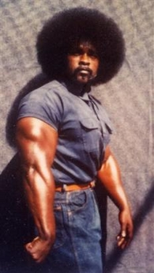

Save Tookie?
by phil on Sunday Nov 27, 2005 3:39 PM
random current event reference with imagery

When one person kills another, there is
immediate revulsion at the nature of the
crime. But in a time so short as to seem
indecent to the members of the personal
family, the dead person ceases to exist as an
identifiable figure. To those individuals in
the community of good will and empathy,
warmth and compassion, only one of the key
actors in the drama remains with whom to
commiserate—and that is always the
criminal. The dead person ceases to be a
part of everyday reality, ceases to exist. She
is only a figure in a historic event. We
inevitably turn away from the past, toward
the ongoing reality. And the ongoing reality
is the criminal; trapped, anxious, now
helpless, isolated, often badgered and
bewildered. He usurps the compassion that
is justly his victim’s due. He will steal his
victim’s moral constituency along with her
life.
"If Stan `Tookie' Williams had been born in Connecticut in the same type of situation, and was a white man, he would have been running a company," says Foxx, who gained some 25 pounds to resemble the hulking inmate. "But born a black man who has the capability of having brute strength and the capability of being smart in the ways of the world, he's going to get into what he gets into."
Backgrounder: Wikipedia Entry on Stanley "Tookie" Williams